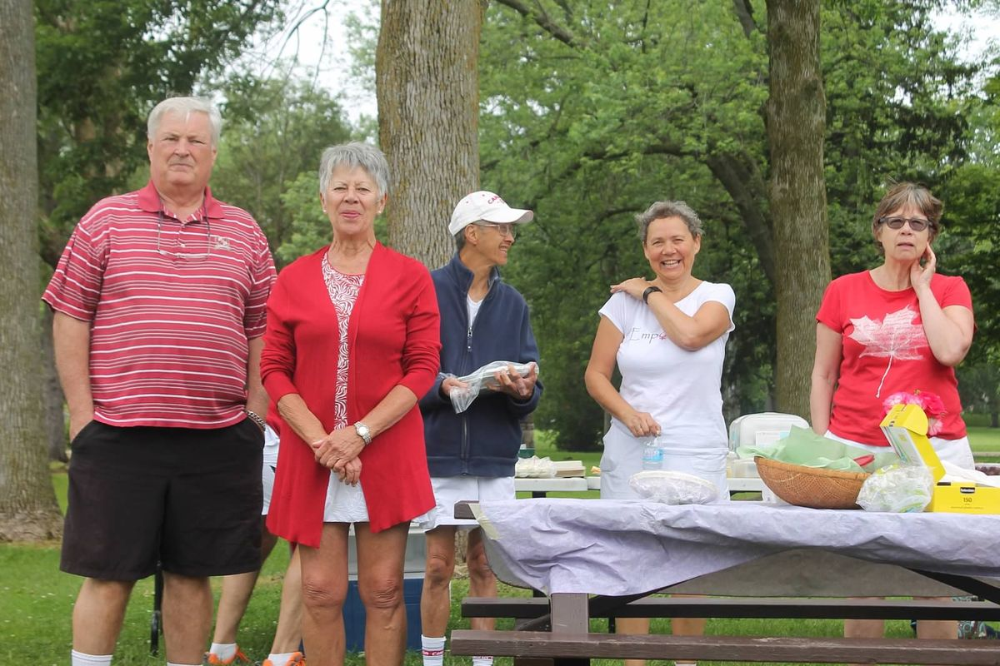
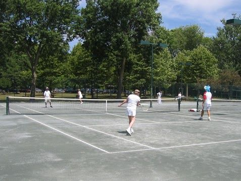

A community club since 1969
Established as a not-for-profit community club in 1969, the Stratford Tennis Club sits in the scenic Upper Queen's Park near the Stratford Festival Theatre. It's run by volunteers, for the community.
Joy, growth and connection
"Our vision is to build a vibrant and inclusive tennis community that fosters joy, growth, and connection. We are committed to developing players of all ages and abilities through high-quality coaching, mentoring, and engaging programs. We are dedicated to promoting the best possible experience for our members, lifelong health, wellness, and friendships both on and off the court."

Not-for-profit · volunteer runClay, hard court, wall and lights

Five clay courts
Some of Ontario's best clay — easy on the joints and rewarding for long rallies. Courts are booked online and included with membership.

Hard court & practice wall
A hard court for all-weather play, a practice wall for solo sessions and a ball machine available to rent ($15).

LED lights & clubhouse
LED lighting for night play, changerooms, lockers and showers, on-site racquet stringing and equipment to borrow.
At the clubhouse
Volunteers who keep the club running
Where members pitch in
Committee members are listed at the clubhouse. Interested in volunteering? Email info@stratfordtennisclub.com.
| Committee | Chair |
|---|---|
| Staffing | Sarah Heaton |
| Winter Tennis | Graham Heaton |
| Tournaments and Events (including Social and Banquet) | Graham Heaton |
| Maintenance, Facilities and Grounds | Kevin Aitcheson |
| Kids Camps | Sarah Heaton |
| Lessons, Junior Elite and other programs | Aidan Buckley |
| IT, Website and POS | Kirsten Harrett |
| Governance (Records, Policies) | Shaun Devine |
| Regional Tournament | Joan Aitcheson |
On the land we play
We acknowledge that Stratford is positioned on the traditional territory of the Haudenosaunee, Anishinaabe and the Neutral (Attawandaron) peoples. As we gather, we are reminded that the City of Stratford is situated on treaty land that is steeped in rich Indigenous history and home to many First Nations, Métis, and Inuit peoples today.
We acknowledge that Stratford is situated on land that was shared between the Haudenosaunee, Anishinaabe and the Neutral (Attawandaron) peoples. We are grateful to have the opportunity to live, work, and play on this land.